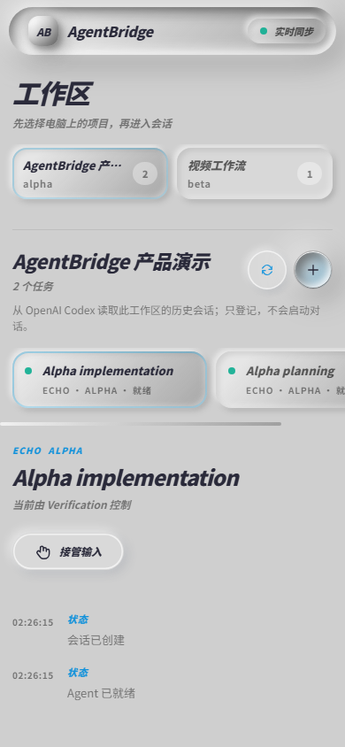
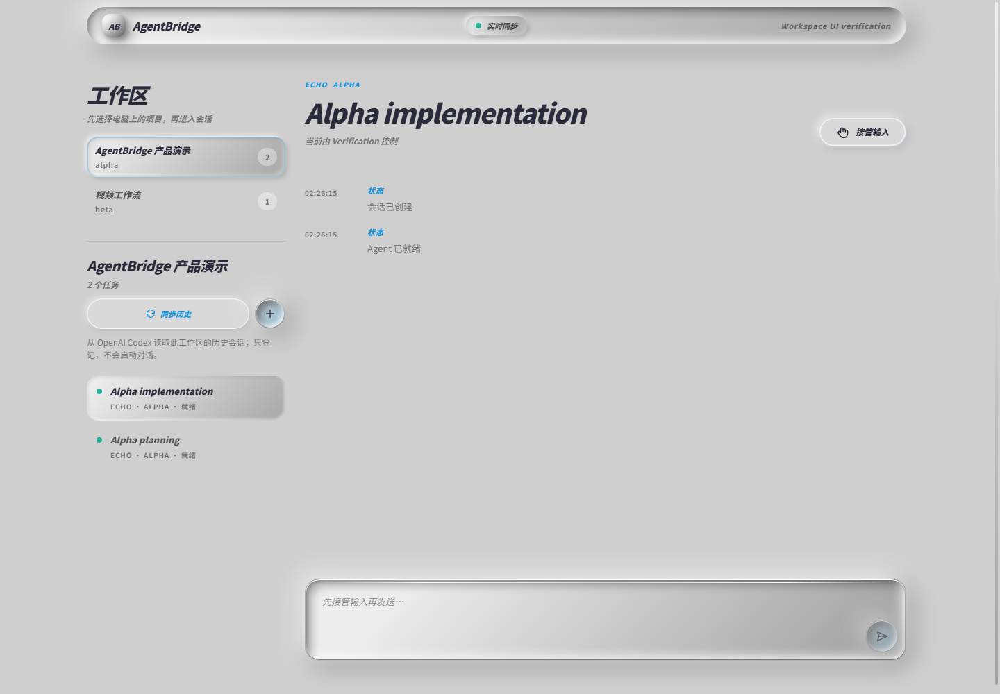

没有 AgentBridge
人在路上，Agent 在原地等。
一个需要确认的小问题，就可能让整个任务停住。远程桌面在手机上字小、操作重，还暴露了整台电脑。
AgentBridge 把电脑上的 Agent 工作区安全地带到手机浏览器。先选项目，再新建或继续真实会话；不用远程桌面，也不用把密钥放进手机，就能看进度、继续对话、切换模型或停止任务。
编程 Agent 往往能连续工作很久，但人不可能一直守在屏幕前。最麻烦的不是“看不到桌面”，而是不知道它做到哪一步、是否在等回复，以及回到电脑后还要重新寻找那段会话。
没有 AgentBridge
一个需要确认的小问题，就可能让整个任务停住。远程桌面在手机上字小、操作重，还暴露了整台电脑。
使用 AgentBridge
手机看到的是结构化会话和明确状态。你可以回复、停止或切换允许的模型，电脑仍是唯一执行端。
/phone 是进入当前项目的最快路径；固定回访入口则让你之后直接切换其他已登记工作区、同步历史或新建会话。
电脑端
从 Codex、Claude Code 或 DSH Desktop 的项目会话中执行 /phone。AgentBridge 会从电脑本机的受限入口接收项目目录和会话信息，并启动安全配对。
手机配对
用微信扫一扫打开手机网页。配对码五分钟内有效且只能用一次，成功后立即失效。以后可以收藏固定入口，不需要保存带密钥的二维码。
手机控制台
手机会自动进入刚刚绑定的工作区。之后可以在工作区列表中切换项目、点击“同步历史”，或按 Agent 的真实能力新建会话。

这里的 Workspace 是电脑上由 AgentBridge 登记的本地项目目录，不是云端 ChatGPT Project。手机只看到安全的名称、状态和会话目录，真正的路径、代码与凭据仍留在电脑。

同一入口可以管理多个本地项目。选中工作区后，右侧只显示属于它的会话，并根据当前 Agent 的能力呈现可执行操作。
工作区使用持久 ID 保存，目录重命名或 Bridge 重启后仍可定位；不会把任意手机路径当成电脑项目。
只调用提供商公开的会话发现能力，不抓取桌面 UI，也不会因为打开列表就自动启动 Agent。
Codex、Claude、DSH 与 Harness 各自支持什么，界面就显示什么；不支持的操作会解释原因。
Agent 暂时不在线时，会话不会从列表消失；你再次打开时才尝试恢复，失败也保留可理解的状态。
点击下面的按钮，右侧手机会演示典型操作。没有复杂桌面窗口，也没有难点按的小图标：会话状态、模型与关键动作都围绕单手操作设计。
Agent、源码、终端环境和提供商凭据都留在电脑。手机只看到经过 Bridge 整理的会话事件，并发送范围明确的控制指令。
电脑保留代码、终端、Agent 进程与凭据，手机永远不是执行环境。
短时二维码只在第一次认设备时使用，成功、过期或重扫后立即失效。
同一时刻只有一端持有输入权，重要操作可追踪，重复请求不会重复执行。
工作区、会话和有序事件分别保存；断线后补内容，离线会话按需恢复。
每个 Agent 只显示自己真实支持的发现、新建、连接和控制能力。
变化的是“手机怎样找到电脑”，不变的是 Workspace、会话、二维码配对、控制租约和 Agent 适配器。二维码功能没有消失：它仍是第一次确认设备和当前项目的安全入口。
电脑与手机在同一 Wi-Fi 时直接访问，适合家里或办公室内使用。
电脑与手机加入同一 tailnet，通过设备私网地址访问；适合个人多设备长期使用。
电脑与手机加入同一个 ZeroTier Network，体验类似跨地点的局域网。
电脑创建受保护的 HTTPS 隧道，手机直接用微信或浏览器打开，无需安装组网 App。
AgentBridge 用统一的会话、事件和控制界面包住不同厂商的本地能力。你不必记住每个工具各自的远控方式，但页面也不会承诺厂商没有公开的能力。
一键启动 AgentBridge，在当前项目里输入 /phone，或从固定入口选择已登记工作区。用微信扫一次后，下一次离开工位，不需要让任务一起停下。